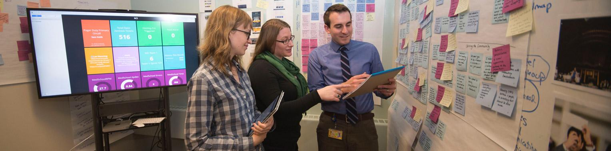
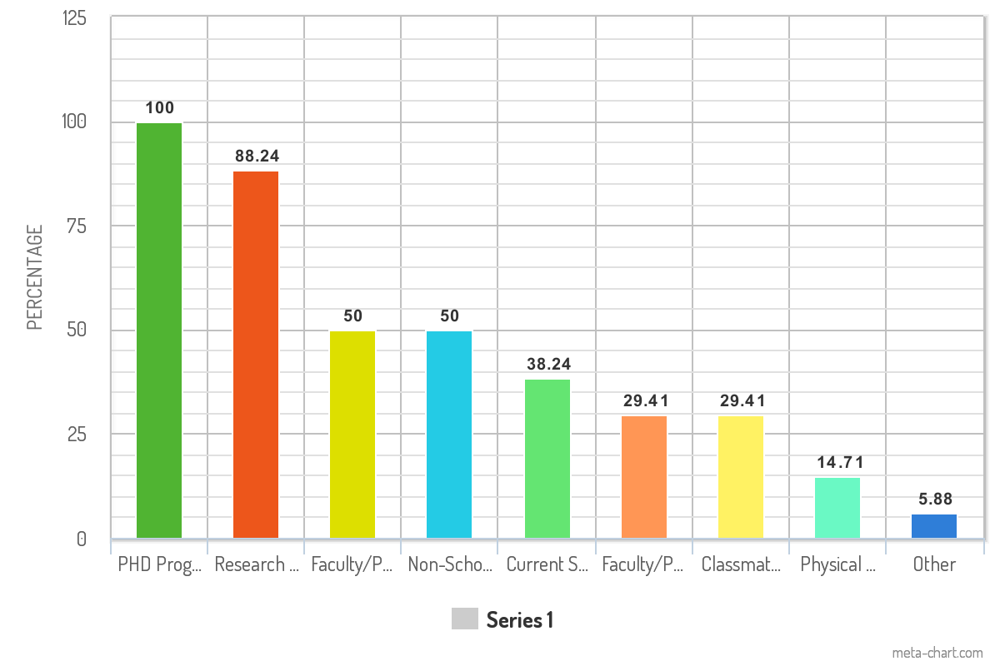
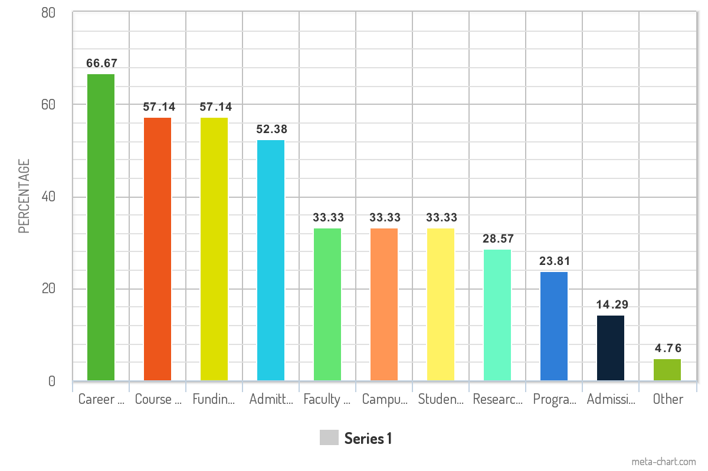
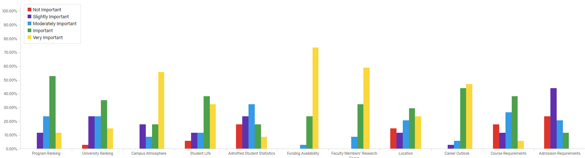

Michigan Multimedia (M3) - Client Research Project
Project Description:
Health Information Technology & Services is a group within the University of Michigan Medical School, also known as Michigan Medicine. They manage all of the departmental websites for each program within Michigan Medicine, e.g. Physiology, Biology, etc. Our group was tasked with conducting a variety of different research methods and use the findings to create guidelines for each of these websites, to ensure prospective students were recieving the information they needed when applying to different colleges at the University of Michigan.
Research Methodologies Used
To create our website guidelines, we used a variety of different research methodologies to learn about our users, they were:

Interaction Maps
Mapping out an entire website to learn its structure, flow, and possible interactions

User Interviews
Speaking with prospective students to learn what information they need to make informed decisions

Competitive Analysis
Looking at some of Michigan's closest competitors to see what content and structure their websites have

Surveys
Reaching out to a wide variety of students to better understand what content they need on websites

Heuristic Evaluation
Going in depth on a website to uncover fundamental usability issues which may affect students experiences
Usability Testing
Sitting down with users and learning how they interact with websites and where potential improvements can be made
Interaction Map
The first task our group decided to tackle was creating an interaction map of one of their existing websites. Since we had no prior experience using these websites and were in general unfamiliar with the subject matter, the interaction map gave us an opportunity to learn more about the content of each website, how that content is structured, and also gave us a glimpse into some of the basic usability issues that were currently present on the website. Below is an image of just one section of one of the websites we mapped out.
User Interviews
Once the Interaction Map was complete, we needed to learn more about the users of these websites. To accomplish this, we conducted 5 user interviews with current PhD students who have either directly used the websites our client manages, or similar websites that other universities offer. The goal of the interviews was to learn how each participant used these types of websites when they were applying, specifically, we focused on the type of content each participant used and how helpful that content was for them to make a decision to pursue or pass on a PhD program. Additionally we spent a lot of time with each participant talking about their frustrations when using these kinds of websites. Lastly, we asked for feedback regarding how the content of the websites better suite their needs.
From our interviews, we were able to discover the following. Additional information can be found in the User Interview Report
- Students have a lot of criteria when determining which programs to apply for
- Information regarding funding availability and earning funding is very important
- Academic websites aren't updated very frequently which causes a lot of frustration
- Students use other resources than the departmental websites to learn information, including current students and friends
- International students have a lot of unique challenges since they can't visit programs as easily
To address these issues, we created the following recommendations:
- Align the content of each website with students key criteria for program selection
- Create funding sections on each website to ensure funding information is easy to access and understand
- Update each website periodically to ensure content is current
- Provide contact information for other students and faculty so students can reach out to them more easily
- Create a Frequently Asked Questions section to help students get answers to commonly asked questions
Comparative Evaluation
After learning about our users through interviews, we conducted a comparative analysis to learn how our clients websites stack up against the competition. In order to conduct the analysis, we needed to first determine which website We then selected the competitors we wished to compare our website against and categorized them based on how they were related to our product.
Each competitor and categorization can be seen below:
After all of our compettors were identified, we came up with criteria which gave us a metric to compare each competitor by. The criteria we came up with were a combination of the feedback we heard during interviews and our own personal experiences using these types of websites.
The image below shows the criteria we used for each competitor, and how each of them compared to the Molecular and Integrative Physiology Website.

From the comparative analysis, we learned the following. Additional information can be found in the Comparative Evaluation Report
- There is "standard" content that needs to be on the website, such as curriculum, faculty, and funding information
- Some content, such as a Frequently Asked Questions page and an Alumni Placement page would help the MIP website standout amongst its competitors
- International students often don't have dedicated sections, which makes things more difficult for them
- The faculty sections of websites should support various methods of sorting to make information finding easier
Online Surveys
After completing our comparative analysis we moved on to creating an online survey. The goal of the survey was to dig deeper into the responses we got during the user interview portion of the project. Specifically, we focused many of our questions around what criteria students used to make their decision about a program, what information sources they use to learn about a program, how a department website can influence their perception of a program, and how outdated information impacts them. Additionally, we asked participants to rank several of the criteria from these questions based on how important they were to them so we could ascertain what to prioritize in the project moving forward.
We sent our survey out to around 500 current PhD students and were able to get 34 responses in total. From these responses, the following are samples of the data we collected.
What resources did you use when you were applying for PhD programs?
What information did you have trouble finding from PhD program websites?
Rank the following criteria based on how important they are now that you've gone through parts of your PhD program
Here are some of the findings we recieved from our survey. Additional information can be found in the Survey Research Report
- Department websites are the most used information sources to learn about a program
- Department websites impact students' perceptions of a program, meaning it is important they make a good impression with prospective students
- Certain resources, such as faculty members and current students are seen as the most helpful resources, but they aren't used as much as other resources
- The criteria that is important to students changes between pre-enrollment and post-enrollment
To address these findings, we recommended the following:
- Focus on making information on these websites easy to find and comprehensive
- Adjust the content on each website to align with what current PhD students deem important since they have experience in the program
- Include contact information for all faculty and current students since they are seen as the most helpful resource for prospective PhD students
Heuristic Evaluation
After spending months learning about our users and what is important to them, we decided to shift our focus to conducting a heuristic evaluation of the Molecular and Integrative Physiology website. The goal of are heuristic evaluation was to identify basic usability issues that can be seen throughout the website. We used Jakob Nielsen's 10 heuristics and modified them to better fit the goals and the scope of the project. For each heuristic, we added between 3 and 7 criteria that enabled us to evaluate the website in a “yes” or “no” manner.
A breakdown of each heuristic and the criteria can be seen below.
From our heuristic evaluation, we discerned the following. Additional information can be found in the Heuristic Evaluation Report
- Determing where a user is on the website can be challenging due to improper programming of the navigation
- There are many styling inconsistensies on the MIP website, including link styles and heading colors
- The built-in search functionality on the website is flawed and needs to be improved
- However, despite these flaws, the MIP website obeys many usability standards
To address these issues, we recommended taking the following actions:
- Fix issues in the navigation so it always prioritizes showing the page the user is on
- Create standards for all visual elements on the website
- When users use the search functionality, it should include predictive text, more helpful error messages, and help users recover from errors such as mis-spellings
Usability Testing
Our final research objective was to perform a usability test on the Molecular and Integrative Physiology Website. The goal of doing a usability test was to get a firsthand look at how real users actually use this website, and learn what works well and what can be improved. In order to run a usability test, we needed to create a script that contained a series of tasks for our users to complete; we ended up modeling the majority of our tasks from the experiences that users shared with us throughout this project and how they told us they used the website when they were applying for PhD programs. Once the script was created, we recruited users for the testing. We were able to find 4 current PhD students that had never interacted with the MIP website, making them the ideal candidates since we wanted the testing to be based on their first experience.
Our Usability test revealed the following about the Molecular Physiology Website. Additional information can be found in the Usability Testing Report
- Faculty filter functionality lacks text telling users if it sorts by first or last name
- The MIP website search functionality is inconsistent and not very helpful
- The current financial information listed is not helpful
- There are several pages with no content on them, which confuses users into thinking the website is broken
- Faculty Page information needs to be more up-to-date
- The relationship between the department and the overall program isn't very clear
- Some page content doesn't align with user expectations, such as the curriculum page not having classes listed on it
To address these issues, our group proposed the following solutions:
- Provide Instructions for filtering mechanisms on the website
- Improve search functionality to include more relevant results
- Create a section on the website dedicated to financial information and include information students need in it
- Modify or Remove pages with no content on them to alleviate confusion
- Makesure faculty pages have up-to-date content on them and show users it is updated via a timestamp
- Make the relationship between the department and program more well known
- Change page content to align with student expectations
Guideline creation & video presentation
After conducting a semesters worth of research for Health Information Technology & Services, we looked back at everything we learned and used that knowledge to create a series of guidelines which can be applied to each website to ensure they have the right content and structure for their users. Determining which criteria to include in the guidelines was challenging, but we relied on what users echoed throughout the project.
Our guidelines included the following:

Standardize Content
Each website needs to include certain content, such as course information, faculty bio pages, and funding information
Update Information Yearly
Update information each year, preferably during summers when students are deciding to join programs

Show Departmental Relationships
Students want to know the relationship between their program, department and the university
Align Content with Expectations
Ensure all content on HITS websites are aligned with what students expect to see

Faculty and Student Info
Prospective students often use faculty and current students as information sources; meaning contact info for these groups is essential